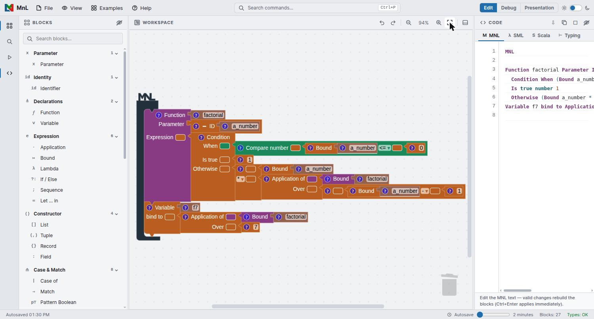
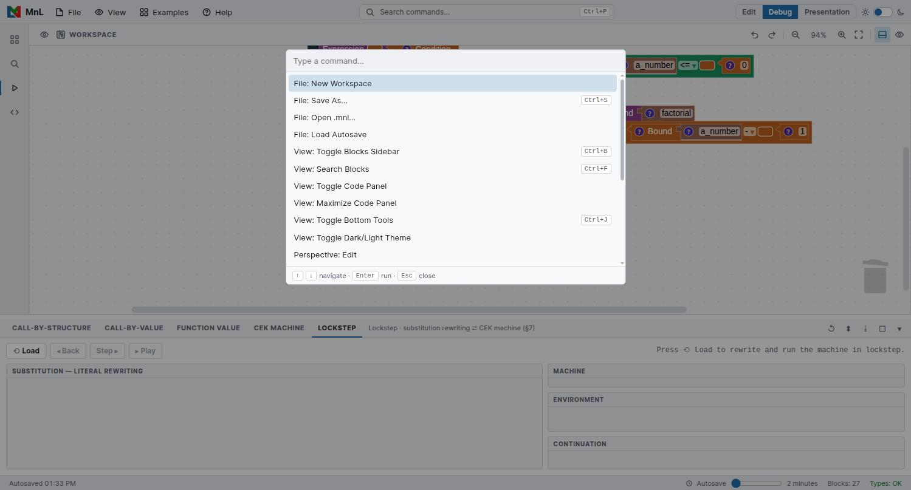

MnL, at a glance
MnL — Macaca nigra Language — is a block-based functional programming language built for teaching and studying programming. You build a program by dragging blocks together; MnL infers types as you go, evaluates the program, and can show you the evaluation itself as a sequence of steps.
Version 5 replaced the old floating-window layout with a single docked shell, so every screenshot of the application chrome here was taken from the current build. Figures that show an individual block are unchanged from earlier versions — the block shapes have been stable since the Kolintang renderer arrived in version 2.
What’s new in 5
Version 5 is a rebuild: MnL moved to TypeScript and Blockly 12, gained a new visualization panel, and got faster. The parts most likely to surprise you if you used version 3 or 4:
- A single docked workspace shell — application bar, activity bar, blocks sidebar, workspace, code panel, bottom tools and status bar — instead of floating windows.
- Three perspectives (Edit, Debug, Presentation) that rearrange the shell for the task at hand.
- A command palette on Ctrl+P for every command in the application.
- The CSEK machine and Lockstep views, which step the whole program through an abstract machine rather than only rewriting a selected redex.
- A bidirectional code panel: editing the MNL text rebuilds the blocks.
- Workspaces save to disk as
.mnlfiles, plus a timed autosave.
| Version | Build | Notes |
|---|---|---|
| 5.2.0 now | 240826 |
Renamed the abstract machine CSEK, and named the S: the live block structure it steps over, never a copy of it. |
| 5.1.0 | 210826 |
A legible, keyboard-operable IDE — per-block label ink, self-hosted typography, a colour-token layer, and keyboard operation throughout. |
| 5.0 | 040726 |
New visualization features, migrating to TypeScript and Blockly 12, and improved performance. |
| 4.0 | 170126 |
First stable release with the windowing layout, showing call-by-structure and call-by-value semantics. |
| 3.0 | 080125 |
Initial release of the MnL language to the public. |
| 2.0 | 170323 |
Live type inference, and color for encoding type information. |
| 1.0 | 220920 |
First stable release of the MnL language. |
You can check which build you are running at any time from Help › About MnL. The same Help menu also has Usage, which opens this help site in a new tab.
The workspace
Everything happens in one window. The screenshot below is the Edit perspective with the bundled Factorial example loaded.

Reading the shell from the outside in:
| Region | What it holds |
|---|---|
| Application bar | The MnL mark, the File, View, Examples and Help menus, the command search box, the perspective switch and the dark/light theme toggle. |
| Activity bar | Four icons down the left edge that show or hide the blocks sidebar, the block search, the bottom tools and the code panel. |
| Blocks sidebar | The toolbox, grouped into named categories with a count each, and a Search blocks field. See the toolbox reference. |
| Workspace | Where you assemble blocks. Its own toolbar carries undo, redo, zoom out, the current zoom level, zoom in, fit blocks in view, and the panel toggles. Drag a block to the bin at the lower right to delete it. |
| Code panel | Four tabs — MNL, SML, Scala and Typing. See the compiler. |
| Bottom tools | The visualization panel, with the five views described in visualization. |
| Status bar | Autosave state and interval, the Blocks count, and
Types — OK when the whole program type-checks. |
The Types indicator in the status bar is the quickest health check you have. If
it does not read OK, a block somewhere is carrying a type error — look for the
warning triangle on the block itself, described under
block info.
Perspectives
The three buttons at the right of the application bar rearrange the shell. They do not change your program — only which panels are on screen.
- Edit — blocks sidebar, workspace and code panel. The layout for writing a program.
- Debug (CSEK Machine) — hides the sidebar and opens the bottom tools, so the workspace sits above the machine views.
- Presentation — strips the chrome back for showing a program to other people.
Each one is also a command, so Ctrl+P then persp gets you
there without reaching for the mouse.
Command palette
Press Ctrl+P, or click the search box in the middle of the application bar. Type to filter, ↑ ↓ to move, Enter to run, Esc to close.

The commands that carry a keyboard shortcut of their own:
| Shortcut | Command |
|---|---|
| Ctrl+P | Open the command palette |
| Ctrl+S | File: Save As… |
| Ctrl+B | View: Toggle Blocks Sidebar |
| Ctrl+F | View: Search Blocks |
| Ctrl+J | View: Toggle Bottom Tools |
| Ctrl+Enter | Apply an edit made in the MNL text pane immediately |
The remainder are palette-only: New Workspace, Open .mnl…, Load Autosave, Toggle Code Panel, Maximize Code Panel, Toggle Dark/Light Theme, the three perspectives, Undo, Redo, Zoom In, Zoom Out, Reset Zoom, Fit Blocks in View and About MnL.
Files and autosave
A workspace is a JSON payload saved with the .mnl extension.
- File › Save As… (Ctrl+S) asks for a file
name and downloads
<name>.mnl. - File › Open .mnl… loads a workspace back from disk.
- File › New Workspace clears the workspace and starts over.
- File › Load Autosave restores the last automatic save.
Autosave runs on the interval shown in the status bar — drag the slider beside it to change how often. The label to its left reports the state, either Autosave ready or the time of the last save.
Autosave and .mnl files are per-browser. If you want to keep a program, use
Save As… and hold on to the file — clearing site data clears the
autosave with it.
Examples
The Examples menu carries ready-made programs, grouped as Basic (Identity function, Factorial, Partial application, Sum list, Count list), Lists (Filter list in three variants, fmap over list, Fold list) and Records & tuples.
If your workspace already has blocks in it, MnL asks before loading:
- Replace — discard what is there and load the example on its own.
- Merge — keep your blocks and add the example alongside them.
- Cancel — leave the workspace untouched.
Loading an example is the fastest way to get something worth stepping through in the visualization views. Every worked example in this help uses the bundled Factorial program.